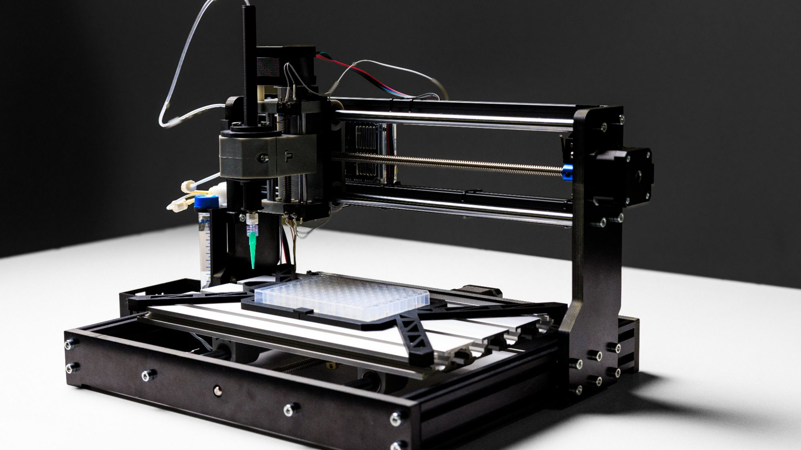
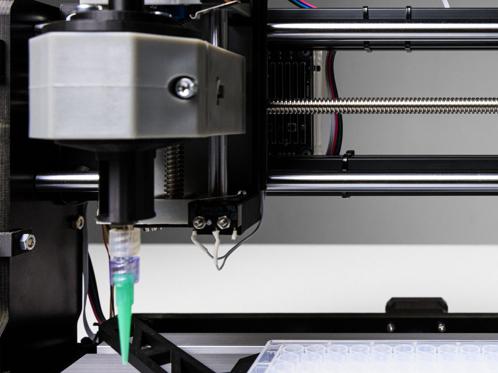
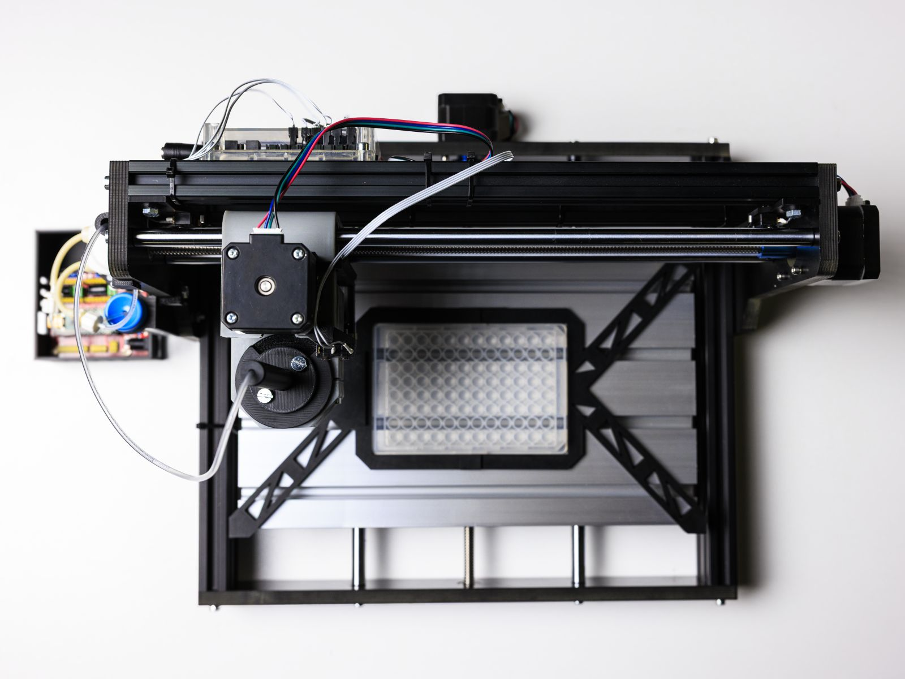
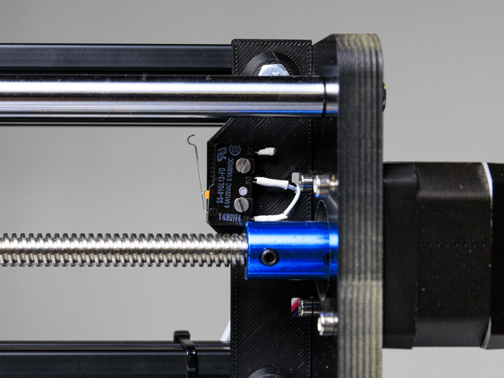
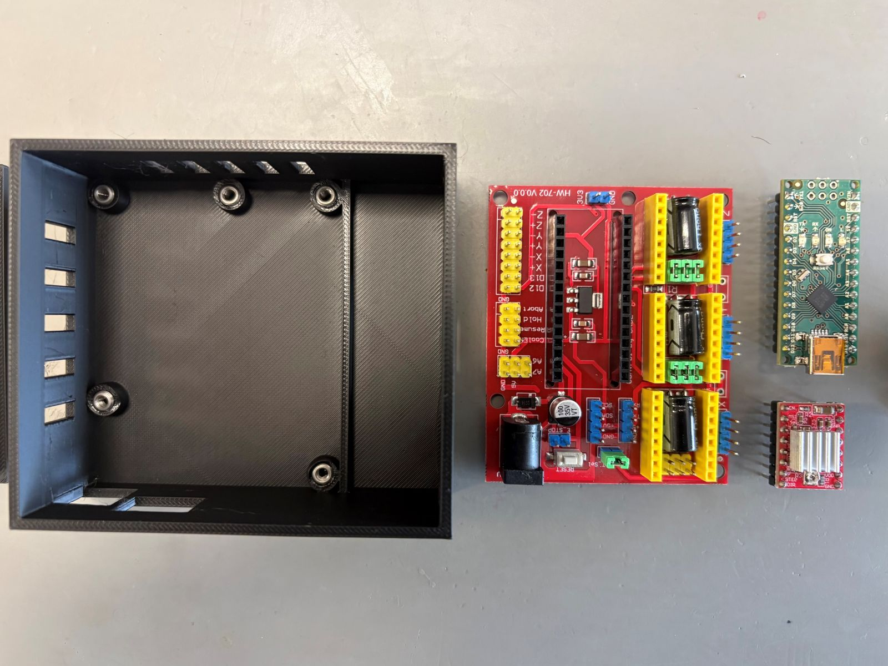
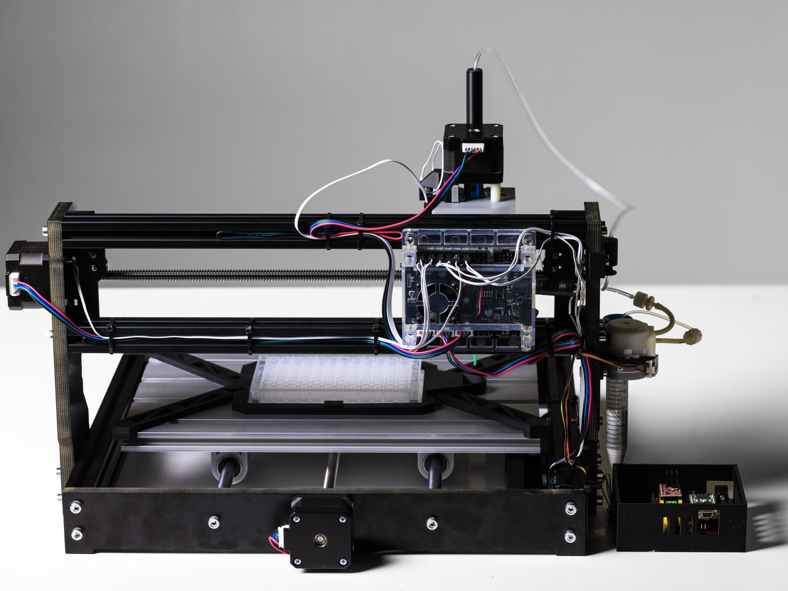
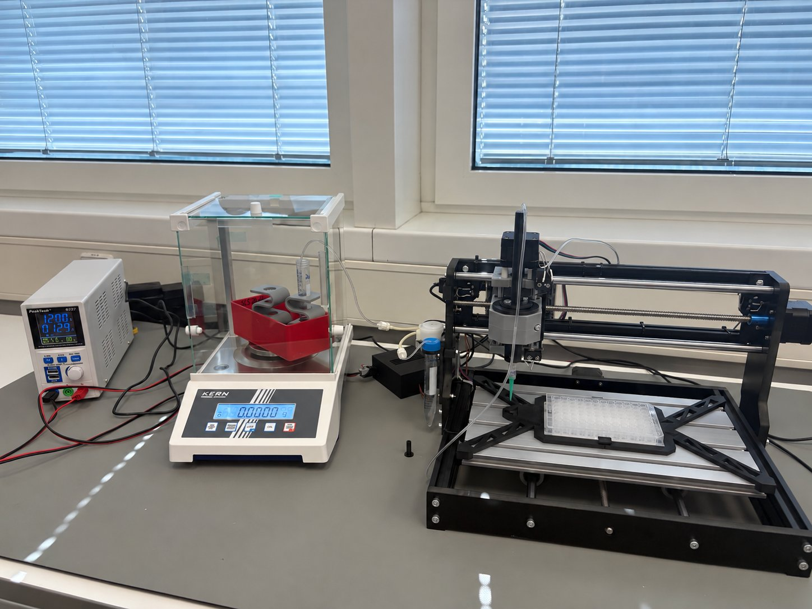

Automatisiertes Dosiersystem für LaborplattenAutomated dispensing system for lab plates
Im Praktikum an den Scientific Instrumentation Workshops (SIW) des EMBL Heidelberg (Fluid Controls, 08/2026 – 09/2026) habe ich eine 3018-CNC-Fräse zu einem automatisierten Dosiersystem für 96-Well-Platten umgebaut. Es befüllt die Platten und überträgt Flüssigkeit zwischen einzelnen Wells. Anbauteile, Pumpensteuerung und Software habe ich eigenständig entwickelt, mit Fusion 360, Arduino (C++), GRBL und Python, und das Fördervolumen mit einer Präzisionswaage kalibriert. Bei 0,1 ml lag die abgegebene Menge im Mittel 0,5 % unter dem Sollwert; die Grenzen des Systems habe ich unten dokumentiert.During my internship at the Scientific Instrumentation Workshops (SIW), EMBL Heidelberg (Fluid Controls, 08/2026 – 09/2026), I converted a 3018 CNC router into an automated dispensing system for 96-well plates. It fills the plates and transfers liquid between individual wells. I developed the add-on parts, the pump control and the software myself, using Fusion 360, Arduino (C++), GRBL and Python, and calibrated the delivered volume on a precision balance. At 0.1 ml, the dispensed volume was on average 0.5 % below target; the system's limitations are documented below.
Entstanden in den Scientific Instrumentation Workshops (SIW) am EMBL Heidelberg. Fotos und Video mit freundlicher Genehmigung des EMBL.Developed at the Scientific Instrumentation Workshops (SIW), EMBL Heidelberg. Photos and video courtesy of EMBL.
Für Laborversuche mussten Flüssigkeiten reproduzierbar in 96-Well-Platten dosiert werden: Kunststoffplatten mit 96 kleinen Vertiefungen („Wells“), in denen Proben parallel angesetzt werden. Ein kommerzieller Pipettierroboter stand für den Versuchsaufbau nicht zur Verfügung, eine 3018-CNC-Fräse dagegen schon.Laboratory experiments required liquids to be dispensed reproducibly into 96-well plates: plastic plates with 96 small cavities (“wells”) in which samples are prepared in parallel. No commercial pipetting robot was available for the test setup, but a 3018 CNC router was.
Das System sollte:The system had to:
Die Fräse positioniert eine Dosiernadel über der Platte, eine Peristaltikpumpe fördert die Flüssigkeit durch einen dünnen Schlauch zur Nadel. Beide Teilsysteme haben eigene Controller und hängen über getrennte serielle Verbindungen am PC. Die Python-Software koordiniert sie: Erst ist die Bewegung abgeschlossen, dann läuft die Pumpe.The router positions a dispensing needle above the plate; a peristaltic pump delivers the liquid to the needle through thin tubing. Both subsystems have their own controller and connect to the PC over separate serial links. The Python software coordinates them: the move completes first, then the pump runs.
Alle Anbauteile sind in Fusion 360 konstruiert und im 3D-Druck gefertigt. Der Dosieradapter sitzt am CNC-Schlitten und führt Schlauch und Nadel senkrecht über die Platte. Der Plattenhalter fixiert die Platte immer an derselben Stelle, sodass der Nullpunkt auf Well A1 nach jeder Referenzfahrt wieder stimmt. An jeder Achse sitzen zwei Endschalter. Die Halterungen unterscheiden sich je Achse, weil der verfügbare Bauraum überall anders ist.All add-on parts are designed in Fusion 360 and produced by 3D printing. The dispensing adapter sits on the CNC carriage and guides tubing and needle vertically above the plate. The plate holder always fixes the plate in the same position, so the origin on well A1 is correct again after every homing cycle. Each axis carries two limit switches. The brackets differ from axis to axis because the available installation space differs everywhere.



Die Pumpe läuft über einen eigenen Strang, unabhängig von der Fräsensteuerung: Arduino Nano, CNC-Shield und A4988-Treiber im 1/16-Mikroschrittbetrieb. Die Firmware auf dem Arduino meldet erst zurück, wenn ein Pumpbefehl vollständig ausgeführt ist, und lässt sich jederzeit per Stoppbefehl unterbrechen. Die zwei Endschalter jeder Achse sind parallel an denselben Eingang geschaltet und dienen der Referenzfahrt und als Schutz vor dem Anfahren der Endlage.The pump runs on its own chain, independent of the router controller: Arduino Nano, CNC shield and A4988 driver in 1/16 microstepping. The firmware on the Arduino only reports back once a pump command has run to completion, and can be interrupted at any time with a stop command. The two limit switches on each axis are wired in parallel to the same input; they serve the homing cycle and protect against running into the end stop position.


Die Software ist in drei Schichten aufgebaut: unten die serielle Kommunikation mit beiden Controllern, darüber die Befüll- und Transferabläufe, oben Bedienung und Ablaufsteuerung. Maschinen- und Plattendaten liegen in Konfigurationsdateien statt im Code. Vor jedem Lauf prüft das Programm alle Volumen, Koordinaten und Schrittzahlen, meldet alle Fehler gesammelt und startet erst nach Bestätigung. Tritt ein Fehler auf, stoppt zuerst die Pumpe, dann fährt die Nadel hoch. Ein Simulationsmodus ersetzt die Hardware, sodass sich Abläufe ohne angeschlossene Maschine testen lassen. Belegungen werden in einer grafischen Oberfläche geplant, einzelne Befehle, etwa ein bestimmtes Volumen in ein bestimmtes Well abgeben, lassen sich auch direkt eingeben. Jeder Lauf wird protokolliert.The software is built in three layers: serial communication with both controllers at the bottom, the filling and transfer routines above it, operation and sequence control on top. Machine and plate data live in configuration files rather than in the code. Before every run the program validates all volumes, coordinates and step counts, reports all errors together and starts only after confirmation. If an error occurs, the pump stops first, then the needle moves up. A simulation mode replaces the hardware so routines can be tested with no machine connected. Layouts are planned in a graphical interface; individual commands, such as dispensing a given volume into a given well, can also be entered directly. Every run is logged.
Wie viel Flüssigkeit ein Motorschritt fördert, hängt von Pumpe, Schlauch und Betriebsbedingungen ab. Deshalb habe ich die Pumpe gravimetrisch kalibriert, mit Wasser auf einer Präzisionswaage. Abgabe und Ansaugen mussten getrennt kalibriert werden, weil die Pumpe in beide Richtungen unterschiedlich fördert. Die Dosierung läuft über die Schrittzahl statt über die Zeit, weil das reproduzierbarer ist: Aus dem Zielvolumen berechnet die Software die Schrittzahl für jeden Vorgang.How much liquid one motor step delivers depends on the pump, the tubing and the operating conditions, so I calibrated the pump gravimetrically, with water on a precision balance. Dispensing and aspiration had to be calibrated separately, because the pump delivers differently in the two directions. Dosing is based on step count rather than time, because that is more reproducible: from the target volume, the software calculates the step count for each operation.

Insgesamt acht Versionen des Adapters. Die meisten Änderungen kamen nicht aus dem Entwurf, sondern aus Problemen, die erst am realen Aufbau sichtbar wurden.In total the adapter went through eight versions. Most changes did not come from the design itself but from problems that only showed up on the real setup.
Das System befüllt 96-Well-Platten automatisch und überträgt Flüssigkeit zwischen einzelnen Wells. Bei fünf Abgaben von je 0,1 ml lag das Volumen im Mittel 0,5 % unter dem Sollwert, der Variationskoeffizient lag bei rund 4,5 %. Die Schwachstelle ist das Ansaugen: In drei Transfers lagen angesaugtes und abgegebenes Volumen im Mittel ähnlich weit unter dem Sollwert (rund −9 % bzw. −6 %). Beim Ansaugen streuten die einzelnen Durchgänge mit rund 14 % aber um eine Größenordnung stärker als bei der Abgabe mit unter 1 %, vermutlich weil die Peristaltikpumpe rückwärts anders fördert. Außerdem wirkt die Flüssigkeit im Schlauch als Puffer: In einem Transfer kam mehr heraus, als angesaugt worden war. Der Füllstand des Schlauchs vor dem Lauf gehört deshalb zu den Versuchsbedingungen. Bei fünf bzw. drei Wiederholungen sind das Richtwerte, keine Spezifikation.The system fills 96-well plates automatically and transfers liquid between individual wells. Across five dispenses of 0.1 ml each, the mean volume was 0.5 % below target, with a coefficient of variation of around 4.5 %. The weak point is aspiration: in three transfers, the aspirated and dispensed volumes were on average similarly far below target (around −9 % and −6 %). But individual aspiration runs scattered by around 14 %, an order of magnitude more than dispensing at below 1 %, probably because the peristaltic pump delivers differently in reverse. The liquid in the tubing also acts as a buffer: in one transfer, more came out than had been aspirated. The fill level of the tubing before a run is therefore part of the test conditions. With five and three repetitions, these are indicative values, not a specification.
Die Pumpe über mehrere Volumen kalibrieren statt über zwei Punkte, oder sie durch eine Spritzenpumpe ersetzen, die ein definiertes Volumen verdrängt und in beide Richtungen gleich fördert.Calibrate the pump across several volumes instead of two points, or replace it with a syringe pump that displaces a defined volume and delivers the same in both directions.